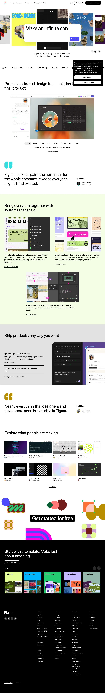

Figma 主题
Figma 的 Design.md 主题展示，围绕媒体内容、趣味互动、专业工具、SaaS 产品组织页面。
Collaborative design tool. Vibrant multi-color, playful yet professional.
媒体内容趣味互动专业工具SaaS 产品开发工具浅色界面B2B 产品效率工具

来源
- 来源
- getdesign.md
- 镜像
- github:VoltAgent/awesome-design-md
- 网站
- https://figma.com/
- 详情
- https://getdesign.md/figma/design-md
色板
#000000: #000000#e6e6e6: #e6e6e6#ffffff: #ffffff#f1f1f1: #f1f1f1#f7f7f5: #f7f7f5#dceeb1: #dceeb1#c5b0f4: #c5b0f4#f4ecd6: #f4ecd6#efd4d4: #efd4d4#c8e6cd: #c8e6cd#f3c9b6: #f3c9b6#1f1d3d: #1f1d3d
字体
display: figmaSansbody: figmaSansmono: figmaMonohints: figmaSans,figmaMono,Geist Mono,Geist,SF Pro,Inter
圆角
control: 8pxcard: 24pxpreview: 32pxpill: 50pxsource: design-md
间距
hair: 1pxxxs: 4pxxs: 8pxsm: 12pxmd: 16pxlg: 24pxxl: 32pxxxl: 48pxsection: 96pxsource: design-md
使用建议
建议
- 建议：Reserve {colors.primary} for genuine primary CTAs and selected states (e.g., {pricing-tab-selected}). Don't use it as a decorative accent。
- 建议：When introducing a story section, choose one color block from the {colors.block-*} family and let it span full content width with {rounded.lg} corners and {spacing.xxl} interior padding。
- 建议：Keep type in {figmaSans} at variable weights — pick from 320, 330, 340, 480, 540, 700 to express hierarchy. Avoid intermediate weights outside this set。
- 建议：Use {figmaMono} only for eyebrows and captions, always uppercase, with the documented positive letter-spacing。
- 建议：Compose every CTA as a pill ({rounded.pill}) and every icon button as a circle ({rounded.full})。
避免
- 避免：introduce mid-gray text. Body hierarchy comes from {figmaSans} weight, not from opacity。
- 避免：add drop shadows to color-block sections — the color is the depth device。
- 避免：introduce new accent colors outside the documented {colors.block-*} palette and {colors.accent-magenta}. Adding, e.g., a saturated brand orange would break the system。
- 避免：combine more than one color block visible inside a single viewport — Figma's pacing always lets the white canvas separate them。
- 避免：square off CTAs. Square buttons read as a different brand。
查看 DESIGN.md